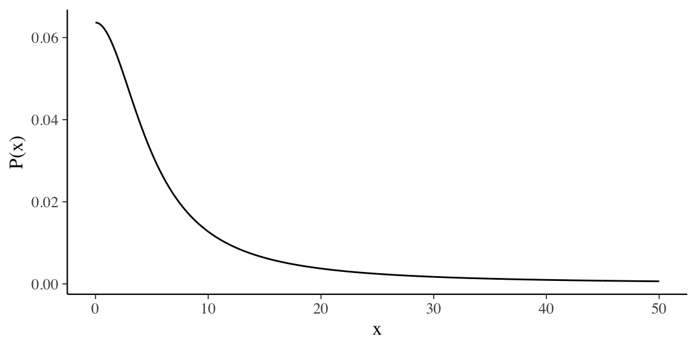
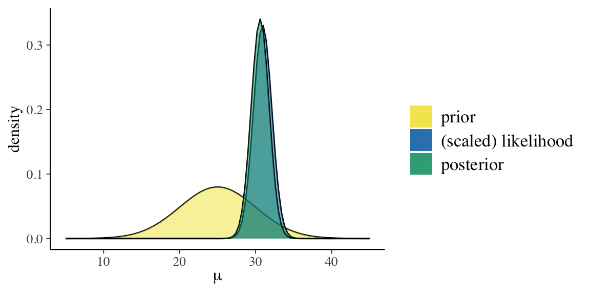
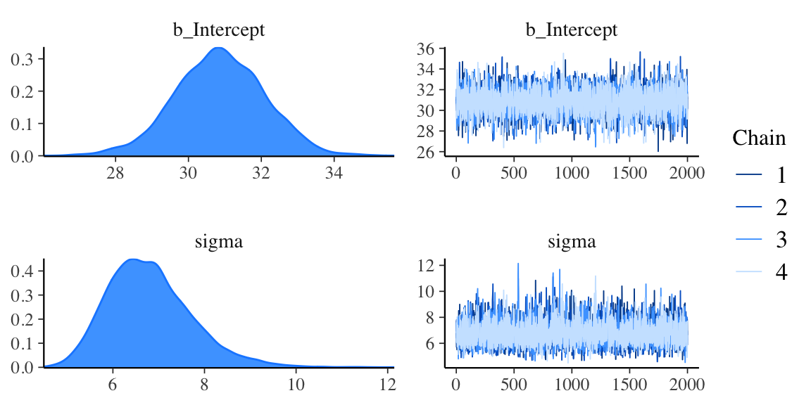

Capitolo 2 Modello bayesiano Normale-Normale
2.1 Distribuzione Normale-Normale con varianza nota
Per \(\sigma^2\) nota, la v.c. Normale è distribuzione a priori coniugata della v.c. Normale. Siano \(Y_1, \dots, Y_n\) \(n\) variabili casuali i.i.d. che seguono la distribuzione Normale:
\[ Y_1, \dots, Y_n \stackrel{iid}{\sim} \mathcal{N}(\mu, \sigma). \] Si vuole stimare \(\mu\) sulla base di \(n\) osservazioni \(y_1, \dots, y_n\). Considereremo qui solamente il caso in cui \(\sigma^2\) sia supposta perfettamente nota.
Ricordiamo che la densità di una Normale è \[ p(y_i \mid \mu, \sigma) = \frac{1}{{\sigma \sqrt {2\pi}}}\exp\left\{{-\frac{(y_i - \mu)^2}{2\sigma^2}}\right\}. \] Essendo le variabili i.i.d., possiamo scrivere la densità congiunta come il prodotto delle singole densità e quindi si ottiene \[ p(y \mid \mu) = \, \prod_{i=1}^n p(y_i \mid \mu). \]
Una volta osservati i dati \(y\), la verosimiglianza diventa
\[\begin{align} \mathcal{L}(\mu \mid y) =& \, \prod_{i=1}^n p(y_i \mid \mu) = \notag\\ & \frac{1}{{\sigma \sqrt {2\pi}}}\exp\left\{{-\frac{(y_1 - \mu)^2}{2\sigma^2}}\right\} \times \notag\\ & \frac{1}{{\sigma \sqrt {2\pi}}}\exp\left\{{-\frac{(y_2 - \mu)^2}{2\sigma^2}}\right\} \times \notag\\ & \vdots \notag\\ & \frac{1}{{\sigma \sqrt {2\pi}}}\exp\left\{{-\frac{(y_n - \mu)^2}{2\sigma^2}}\right\}. \end{align}\]
Se viene scelta una densità a priori Normale, ciò fa sì che anche la densità a posteriori sia Normale. Supponiamo che \[\begin{equation} p(\mu) = \frac{1}{{\tau_0 \sqrt {2\pi}}}\exp\left\{{-\frac{(\mu - \mu_0)^2}{2\tau_0^2}}\right\}, \tag{2.1} \end{equation}\] ovvero che la distribuzione a priori di \(\mu\) sia Normale con media \(\mu_0\) e varianza \(\tau_0^2\). Possiamo dire che \(\mu_0\) rappresenta il valore ritenuto più probabile per \(\mu\) e \(\tau_0^2\) il grado di incertezza che abbiamo rispetto a tale valore.
Svolgendo una serie di passaggi algebrici, si arriva a \[\begin{equation} p(\mu \mid y) = \frac{1}{{\tau_p \sqrt {2\pi}}}\exp\left\{{-\frac{(\mu - \mu_p)^2}{2\tau_p^2}}\right\}, \tag{2.2} \end{equation}\]
dove \[\begin{equation} \mu_p = \frac{\frac{1}{\tau_0^2}\mu_0+ \frac{n}{\sigma^2}\bar{y}}{\frac {1}{\tau_0^2} + \frac{n}{\sigma^2}} \tag{2.3} \end{equation}\]
e \[\begin{equation} \tau_p^2 = \frac{1}{\frac {1}{\tau_0^2}+ \frac{n}{\sigma^2}}. \tag{2.4} \end{equation}\]
In altri termini, se la distribuzione a priori per \(\mu\) è Normale, la distribuzione a posteriori è anch’essa Normale con valore atteso (a posteriori) \(\mu_p\) e varianza (a posteriori) \(\tau_p^2\) date dalle espressioni precedenti.
In conclusione, il risultato trovato indica che:
- il valore atteso a posteriori è una media pesata fra il valore atteso a priori \(\mu_0\) e la media campionaria \(\bar{y}\); il peso della media campionaria è tanto maggiore tanto più è grande \(n\) (il numero di osservazioni) e \(\tau_0^2\) (l’incertezza iniziale);
- l’incertezza (varianza) a posteriori \(\tau_p^2\) è sempre più piccola dell’incertezza a priori \(\tau_0^2\) e diminuisce al crescere di \(n\).
2.2 Il modello Normale con Stan
Per esaminare un esempio pratico, consideriamo i 30 valori BDI-II dei soggetti clinici di Zetsche, Bürkner, and Renneberg (2019):
df <- data.frame(
y = c(
26.0, 35.0, 30, 25, 44, 30, 33, 43, 22, 43,
24, 19, 39, 31, 25, 28, 35, 30, 26, 31, 41,
36, 26, 35, 33, 28, 27, 34, 27, 22
)
)Calcoliamo le statistiche descrittive del campione di dati:
df %>%
summarise(
sample_mean = mean(y),
sample_sd = sd(y)
)
#> sample_mean sample_sd
#> 1 30.93333 6.606858Nella discussione seguente assumeremo che \(\mu\) e \(\sigma\) siano indipendenti. Assegneremo a \(\mu\) una distribuzione a priori \(\mathcal{N}(25, 5)\) e a \(\sigma\) una distribuzione a priori \(Cauchy(0, 5)\).
Il modello statistico diventa:
\[\begin{align} Y_i &\sim \mathcal{N}(\mu, \sigma) \notag\\ \mu &\sim \mathcal{N}(\mu_{\mu} = 25, \sigma_{\mu} = 5) \notag\\ \sigma &\sim \Cauchy(0, 5) \notag \end{align}\]
In base al modello definito, la variabile casuale \(Y\) segue la distribuzione Normale di parametri \(\mu\) e \(\sigma\). Il parametro \(\mu\) è sconosciuto e abbiamo deciso di descrivere la nostra incertezza relativa ad esso mediante una distribuzione a priori Normale con media uguale a 25 e deviazione standard pari a 5. L’incertezza relativa a \(\sigma\) è quantificata da una distribuzione a priori half-Cauchy(0, 5), come indicato nella figura seguente:
data.frame(x = c(0, 50)) %>%
ggplot(aes(x)) +
stat_function(
fun = dcauchy,
n = 1e3,
args = list(location = 0, scale = 5)
) +
ylab("P(x)") +
theme(legend.position = "none")
Dato che il modello è Normale-Normale, è possibile una soluzione analitica, come descritto in precedenza per il caso in cui \(\sigma\) è noto. In tali condizioni, la distribuzione a posteriori per \(\mu\) può essere trovata con la funzione bayesrules:::summarize_normal_normal():
bayesrules:::summarize_normal_normal(
mean = 25, sd = 5, sigma = 6.61, y_bar = 30.93, n = 30
)
#> model mean mode var sd
#> 1 prior 25.00000 25.00000 25.00000 5.000000
#> 2 posterior 30.60356 30.60356 1.37623 1.173128La rappresentazione grafica della funzione a priori, della verosimiglianza e della distribuzione a posteriori per \(\mu\) è fornita da:
bayesrules:::plot_normal_normal(
mean = 25, sd = 5, sigma = 6.61, y_bar = 30.93, n = 30
)
La procedura MCMC utilizzata da Stan è basata su un campionamento Monte Carlo Hamiltoniano che non richiede l’uso di distribuzioni a priori coniugate. Pertanto per i parametri è possibile scegliere una qualunque distribuzione a priori arbitraria.
Per trovare le distribuzioni a posteriori dei parametri \(\mu\) e \(\sigma\), useremo le funzioni del pacchetto cmdstanr. Il modello statistico descritto sopra si può scrivere in Stan nel modo seguente:
modelString = "
data {
int<lower=0> N;
vector[N] y;
}
parameters {
real mu;
real<lower=0> sigma;
}
model {
mu ~ normal(25, 10);
sigma ~ cauchy(0, 10);
y ~ normal(mu, sigma);
}
"
writeLines(modelString, con = "code/normalmodel.stan")Sistemiamo i dati nel formato appropriato per potere essere letti da Stan:
data_list <- list(
N = length(df$y),
y = df$y
)Leggiamo il file in cui abbiamo salvato il codice Stan
file <- file.path("code", "normalmodel.stan")compiliamo il modello
mod <- cmdstan_model(file)ed eseguiamo il campionamento MCMC
fit <- mod$sample(
data = data_list,
iter_sampling = 4000L,
iter_warmup = 2000L,
seed = SEED,
chains = 4L,
parallel_chains = 2L,
refresh = 0,
thin = 1
)
#> Running MCMC with 4 chains, at most 2 in parallel...
#>
#> Chain 1 finished in 0.1 seconds.
#> Chain 2 finished in 0.1 seconds.
#> Chain 3 finished in 0.1 seconds.
#> Chain 4 finished in 0.1 seconds.
#>
#> All 4 chains finished successfully.
#> Mean chain execution time: 0.1 seconds.
#> Total execution time: 0.4 seconds.Le stime a posteriori dei parametri si ottengono con:
fit$summary(c("mu", "sigma"))
#> # A tibble: 2 × 10
#> variable mean median sd mad q5 q95 rhat
#> <chr> <dbl> <dbl> <dbl> <dbl> <dbl> <dbl> <dbl>
#> 1 mu 30.8 30.8 1.23 1.20 28.8 32.8 1.00
#> 2 sigma 6.83 6.72 0.931 0.894 5.49 8.50 1.00
#> # … with 2 more variables: ess_bulk <dbl>, ess_tail <dbl>
oppure, dopo avere trasformato l’oggetto fit nel formato stanfit,
stanfit <- rstan::read_stan_csv(fit$output_files())con
out <- rstantools::posterior_interval(as.matrix(stanfit), prob = 0.95)
out
#> 2.5% 97.5%
#> mu 28.38840 33.271595
#> sigma 5.29920 8.911617
#> lp__ -73.60881 -69.814000Possiamo dunque concludere, con un grado di certezza soggettivo del 95%, che siamo sicuri che la media della popolazione da cui abbiamo tratto i dati è compresa nell’intervallo [28.39, 33.27].
2.3 Il modello normale con quap()
Ripetiamo l’analisi precedente usando le funzioni del pacchetto rethinking per trovare la distribuzione a posteriori dei parametri \(\mu\) e \(\sigma\). Definiamo il modello statistico mediante la funzione alist():
flist <- alist(
y ~ dnorm(mu, sigma),
mu ~ dnorm(25, 10),
sigma ~ dcauchy(0, 10)
)Le precedenti istruzioni R specificano una variabile casuale \(Y\) che si distribuisce come una Normale di parametri \(\mu\) e \(\sigma\); questa è la verosimiglianza. La distribuzione a priori del parametro \(\mu\) è una Normale di media 25 e deviazione standard 10. La distribuzione a priori del parametro \(\sigma\) è una half-Cauchy di parametri location = 0 e scale = 10.
Usiamo la funzione quap() per ottenere l’approssimazione quadratica delle distribuzioni a posteriori di \(\mu\) e \(\sigma\):
set.seed(123)
m <- quap(
flist,
data = df
)L’intervallo di credibilità al 95% è dato dalla funzione precis():
out <- precis(m, prob = 0.95)
out
#> mean sd 2.5% 97.5%
#> mu 30.852580 1.1668054 28.565683 33.139476
#> sigma 6.433829 0.8172245 4.832098 8.035559Possiamo dunque dire che, con un grado di certezza soggettivo del 95%, siamo sicuri che la media della popolazione da cui abbiamo tratto i dati è compresa nell’intervallo [28.57, 33.14].
2.4 Il modello normale con brm()
Stimiamo ora la distribuzione a posteriori di \(\mu\) usando nuovamente il campionamento MCMC mediante la funzione brms::brm(). In questo caso non è necessario scrivere il modello in linguaggio Stan come abbiamo fatto in precedenza. La sintassi specifiata di seguito viene comunque trasformata in linguaggio Stan prima di adattare il modello ai dati:
fit3 <- brm(
data = df,
family = gaussian(),
y ~ 1,
prior = c(
prior(normal(25, 10), class = Intercept),
prior(cauchy(0, 10), class = sigma)
),
iter = 4000,
refresh = 0,
chains = 4
)I trace-plot si ottengono con l’istruzione seguente:
plot(fit3)
Le stime della distribuzione a posteriori si ottengono con la funzione summary():
summary(fit3)
#> Family: gaussian
#> Links: mu = identity; sigma = identity
#> Formula: y ~ 1
#> Data: df (Number of observations: 30)
#> Draws: 4 chains, each with iter = 4000; warmup = 2000; thin = 1;
#> total post-warmup draws = 8000
#>
#> Population-Level Effects:
#> Estimate Est.Error l-95% CI u-95% CI Rhat
#> Intercept 30.86 1.24 28.39 33.24 1.00
#> Bulk_ESS Tail_ESS
#> Intercept 6137 4967
#>
#> Family Specific Parameters:
#> Estimate Est.Error l-95% CI u-95% CI Rhat Bulk_ESS
#> sigma 6.80 0.92 5.29 8.89 1.00 5136
#> Tail_ESS
#> sigma 4234
#>
#> Draws were sampled using sampling(NUTS). For each parameter, Bulk_ESS
#> and Tail_ESS are effective sample size measures, and Rhat is the potential
#> scale reduction factor on split chains (at convergence, Rhat = 1).I risultati sono molto simili a quelli ottenuti in precedenza.
Considerazioni conclusive
Questo esempio ci mostra come calcolare l’intervallo di credibilità per la media di una v.a. Normale. La domanda più ovvia di analisi dei dati, dopo avere visto come creare l’intervallo di credibilità per la media di un gruppo, riguarda il confronto tra le medie di due gruppi. Questo però è un caso speciale di una tecnica di analisi dei dati più generale, chiamate analisi di regressione lineare. Prima di discutere il problema del confronto tra le medie di due gruppi è dunque necessario esaminare il modello statistico di regressione lineare.